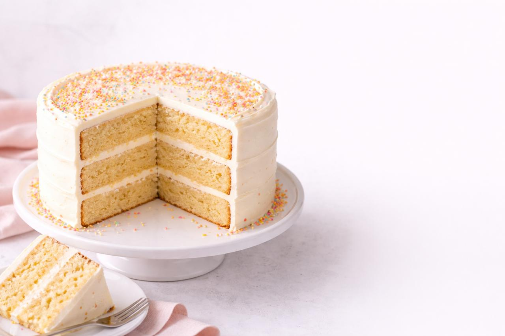

كيك الفانيليا
خطوات التحضير
| الخطوة | الوصف | الوقت |
|---|---|---|
| 1 | تجهيز المكونات وتركها بدرجة حرارة الغرفة | 5 دقائق |
| 2 | خلط المكونات الجافة (دقيق - سكر) | 3 دقائق |
| 3 | خفق البيض مع الزبدة والفانيليا | 5 دقائق |
| 4 | إضافة الحليب بالتدريج | 2 دقائق |
| 5 | خبز في الفرن على حرارة 180 درجة | 30 دقيقة |
| 6 | ترك الكيك ليبرد وتزيينه | 10 دقائق |
نصائح الشيف
- قبل الخبز
- سخن الفرن قبل الخبز بـ 10 دقائق
- ادهن القالب بالزبدة ورشة دقيق
- أثناء الخبز
- لا تفتح الفرن قبل 20 دقيقة
- استخدم عود أسنان لاختبار النضج
- بعد الخبز
- اترك الكيك يبرد 10 دقائق قبل إخراجه
- قدمه مع الشاي أو القهوة